钓鱼流程
点开可看完整过程：抛竿、等待、咬钩、提竿。
抛竿之后要盯住浮标：鱼咬钩的瞬间提竿，错过就要重来。
点开可看完整过程：抛竿、等待、咬钩、提竿。
一次失败的操作，以及用中控台依次展示各品质的鱼。
浮标下沉时没有及时提竿，节奏没控制好，鱼脱钩溜走。
用中控台依次切换品质，演示普通到传说的鱼。
背包里的渔获可以直接卖给渔夫。澜按品质给价：普通 20、稀有 55、史诗 140、传说 320 金币。品质越高，单价越高。
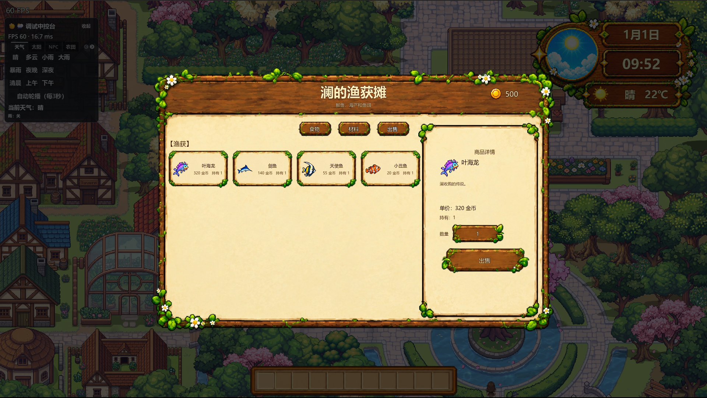
按品质陈列：普通 19 · 稀有 22 · 史诗 17 · 传说 3。点标题展开或收起。
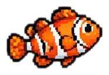
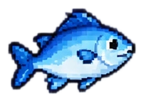
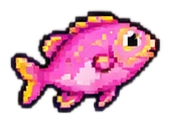
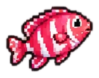
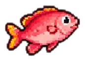
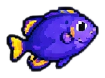
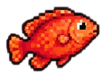
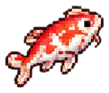
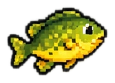
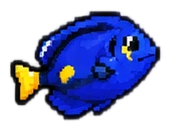
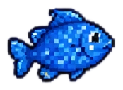
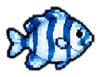
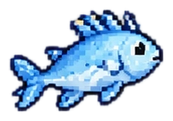
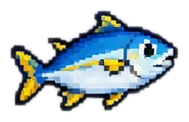
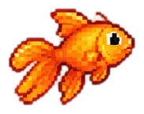
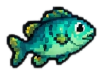
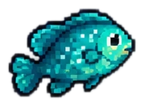
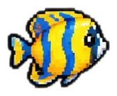
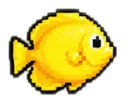
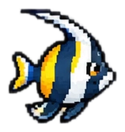
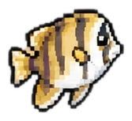
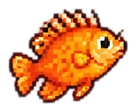
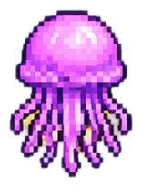
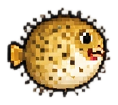
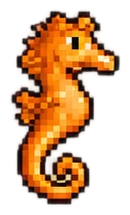
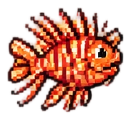
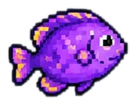
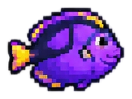
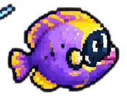
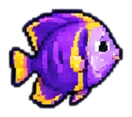
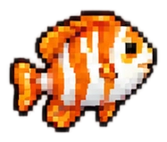
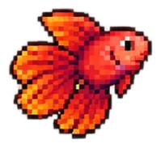
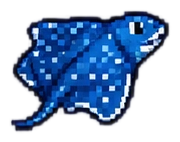
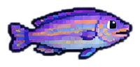
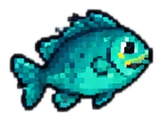
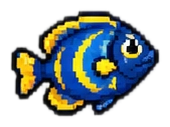
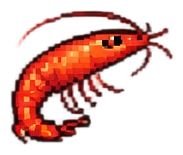
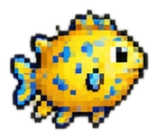
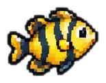
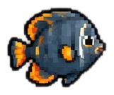
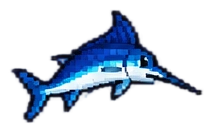
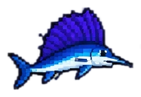
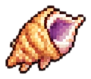
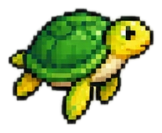
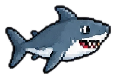
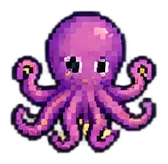
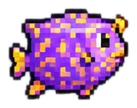
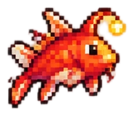
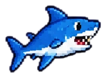
我设计钓鱼，是想给玩家在战斗之后一种别样的体验，也想照顾更喜欢休闲风格的玩家。
钓鱼还提供了另一条获取金币的途径，让日常有地方可去，也能和 NPC 产生联动。
不同品质和等级的鱼带来了更大的可玩性；如果你喜欢全收集，可以挑战集齐所有鱼类。